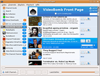
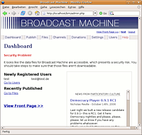

Democracy-TV
Archivierte Anleitung
Dieser Artikel wurde archiviert, da er - oder Teile daraus - nur noch unter einer älteren Ubuntu-Version nutzbar ist. Diese Anleitung wird vom Wiki-Team weder auf Richtigkeit überprüft noch anderweitig gepflegt. Zusätzlich wurde der Artikel für weitere Änderungen gesperrt.
Dieser Artikel wurde für die folgenden Ubuntu-Versionen getestet:
Hinweis:
Seit Juli 2007 wird das Projekt rund um den Democracy Player als Miro weitergeführt.
Zum Verständnis dieses Artikels sind folgende Seiten hilfreich:
Democracy-TV ist ein OpenSource-Projekt der Participatory Culture Foundation  . Diese gemeinnützige Organisation entwickelt und fördert mehrere freie Video-Sharing- und TV-Projekte im Internet, mit dem Ziel, bei dem Massenmedium Internet-TV die Meinungsvielfalt sicherzustellen. Etwas genauer formuliert handelt es sich bei Democracy um ein freies und offenes Abspielprogramm für TV-Sendungen, Videocasts, Podcasts und Audio-/Video-Quellen, bei dem die Videoübertragung via BitTorrent
. Diese gemeinnützige Organisation entwickelt und fördert mehrere freie Video-Sharing- und TV-Projekte im Internet, mit dem Ziel, bei dem Massenmedium Internet-TV die Meinungsvielfalt sicherzustellen. Etwas genauer formuliert handelt es sich bei Democracy um ein freies und offenes Abspielprogramm für TV-Sendungen, Videocasts, Podcasts und Audio-/Video-Quellen, bei dem die Videoübertragung via BitTorrent  erfolgt.
erfolgt.
Democracy-TV umfasst mehrere Applikationen:
Den Democracy Player
Die Videocast-Software Broadcast Machine
Die Suchmaschine Videobomb
.

Democracy-Player¶
Mit dem Democracy-Player können von anderen Nutzern bereitgestellte Videos heruntergeladen und abgespielt werden.
Ubuntu-Paketquelle¶
Seit Edgy Eft 6.10 ist der Democracy-Player in den Ubuntu-Quellen vorhanden und es muss einfach folgendes Paket installiert [1] werden:
democracyplayer (universe, [2])
Nach Abschluss der Installation kann der Democracy-Player über das GNOME-Startmenü unter
"Anwendungen -> Unterhaltungsmedien -> Democracy TV"
aufgerufen werden.
Fremdquelle¶
Die Software in den Ubuntu-Quellen ist nicht ganz auf dem aktuellen Stand. Möchte man die aktuelle Version nutzen, so kann man den Player auch über eine Fremdquelle installieren. Je nach Ubuntu-Version wird dazu der Paketverwaltung eine der folgenden Paketquellen hinzugefügt [2]:
deb http://ftp.osuosl.org/pub/pculture.org/democracy/linux/repositories/ubuntu dapper/ deb http://ftp.osuosl.org/pub/pculture.org/democracy/linux/repositories/ubuntu edgy/ deb http://ftp.osuosl.org/pub/pculture.org/democracy/linux/repositories/ubuntu feisty/
Hinweis!
Zusätzliche Fremdquellen können das System gefährden.
Nachdem die Paketquellen neu geladen wurden, kann der Player anschließend ebenfalls einfach durch Auswahl des Paketes
democracyplayer
installiert werden.

Broadcast-Machine¶
Wer nicht nur Videos anschauen, sondern auch selber Videos publizieren möchte, benötigt die Broadcast-Machine. Es handelt sich dabei um eine in PHP geschriebene Server-Anwendung, die einen Apache-Webserver mit PHP4/5 voraussetzt. Wenn zusätzlich auch MySQL auf dem Server installiert ist, ist das von Vorteil, aber nicht unbedingt notwendig.
Nicht jedem steht ein solcher Webserver zur Verfügung. Wer die Broadcast-Machine trotzdem nutzen oder nur mal testen möchte, muss sich den Server lokal auf dem eigenen Rechner installieren. Dazu brauchen lediglich die beiden Pakete
apache2
php5
installiert zu werden. Nähere Informationen zum Aufsetzen des Webservers findet man in den Beiträgen Apache und PHP. Es sei im Folgenden davon ausgegangen, dass /var/www das Rootverzeichnis des Webservers bildet, was üblicherweiser Standard ist.
Für die weitere Installation wird von der Downloadseite die Datei bm.zip heruntergeladen und auf dem Desktop gespeichert. Die Datei beinhaltet ein Verzeichnis /bm, das entpackt [6] und dann nach Öffnen eines Terminals [3] mittels des Befehls
sudo mv ~/Desktop/bm /var/www
nach /var/www/bm verschoben wird. Danach müssen noch ein paar Unterverzeichnisse angelegt und deren Rechte angepasst werden.
cd /var/www/bm/ sudo mkdir data torrents publish text thumbnails sudo chmod 777 data torrents publish text thumbnails
Anschließend ruft man in einem Webbrowser folgenden Link auf:
Es öffnet sich eine Eingabemaske zum Anlegen eines Benutzerkontos, wo folgende Daten anzugeben sind:
E-Mail Adresse
Name bzw. Alias
Passwort + Wiederholung
Mit Klick auf den Button "Register >>" wird das Nutzerkonto angelegt. Nach einem weiteren Klick auf den Link "Continue" in der Bestätigungsmeldung steht die Broadcast-Machine zum Publizieren eigener Videos zur Verfügung.
- Erstellt mit Inyoka
-
 2004 – 2017 ubuntuusers.de • Einige Rechte vorbehalten
2004 – 2017 ubuntuusers.de • Einige Rechte vorbehalten
Lizenz • Kontakt • Datenschutz • Impressum • Serverstatus -
Serverhousing gespendet von